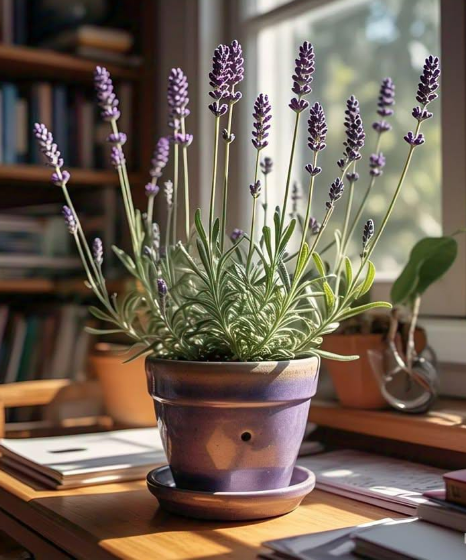
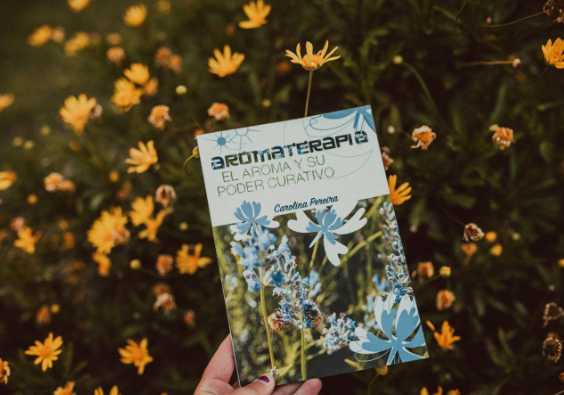

Llevá la energía de las plantas con vos. Aromas que acompañan tu día a día.
Descubrí nuestra magiaSoy Carolina, Terapeuta Holística con más de 15 años de camino en la Terapia Floral y la Aromaterapia. Mi labor nace de la curiosidad y el respeto por la naturaleza, integrando saberes como la astrología, el tarot, la fitoterapia y las constelaciones familiares.
Entiendo la sanación como un proceso integral, por eso aplico estas herramientas tanto en mi vida cotidiana como en mi práctica profesional. He volcado toda esta sabiduría en mi libro "El poder curativo del aroma", y actualmente me encuentro gestando mi próximo título para seguir compartiendo este camino de bienestar contigo.
Conoce más
"Mi colgante es hermoso. Lo uso todos los días y el aroma es sútil pero relajante."
"Su libro "El aroma y su poder curativo" es muy nutritivo."
"Desde que uso los collares mis dias son mejores."

"Me descubrí defendiendo una práctica que hacía tiempo había abandonado", confiesa Carolina en el prólogo de "Aromas que sanan". Caminando por los pasillos del Hospital Centenario, supo que en la ciencia occidental nunca encontraría lo que buscaba. Había crecido entre las curas de sus tías Nata y Negra, entre los yuyos de los baldíos y la sabiduría de la Pachamama, pero lo había dejado atrás para estudiar medicina.
Este libro es el relato de ese retorno a las raíces. Más que una guía de aromaterapia, es una memoria íntima donde Caro comparte cómo el aroma del jazmín la conectó con el recuerdo de su abuela, cómo re-aprendió a aceptar su propio olor y cómo, a través de los aceites esenciales, encontró el equilibrio que la facultad no pudo darle. Con la misma pasión que pone en sus talleres, nos invita a redescubrir el poder olfativo para sanar heridas y avanzar en el autodescubrimiento.
Iniciá tu viaje holísticoCaro responde personalmente cada mensaje y hace envíos a todo el país.
Respondemos en menos de 24 horas
Ciudad de Rosario, Santa Fe - Argentina
+54 9 3415 80-6460